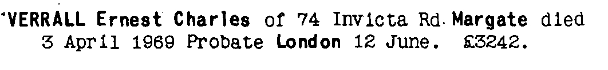
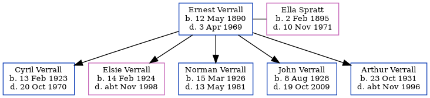

Ernest Charles Verrall 1890 - 1969
[ Home ] | [ Calendar ] | [ Surnames Index ] | [ Errors ] | [ Family History ]Ernest Verrall, the husband of Ella Spratt (the great-aunt of Nigel Horne), was born in Doddington, Kent, England on 12 May 18901,2,3,4,5,6,7 and married Ella (a charwork with whom he had 5 children: Cyril Ernest, Elsie Amy, Norman Charles, John Leslie and Arthur George) in Thanet, Kent, England around May 19229.
During his life, he was living at his birthplace in 18911; Minster in Thanet in 19012 and on 2 Apr 19113; and at 74 Invicta Road, Margate, Kent on 29 Sept 19394, in 195510, in 196511 and in 1969.
He died on 3 Apr 1969 in Margate, Kent, England6,8.
Children
- Cyril Ernest was born on 13 Feb 1923
- Elsie Amy was born on 14 Feb 1924
- Norman Charles was born on 15 Mar 1926
- John Leslie was born on 8 Aug 1928
- Arthur George was born on 23 Oct 1931
Citations
- 1891 England Census Online publication - Provo, UT, USA: The Generations Network, Inc., 2005.Original data - Census Returns of England and Wales, 1891. Kew, Surrey, England: The National Archives of the UK (TNA): Public Record Office (PRO), 1891. Data imaged from The National
- 1901 England Census Online publication - Provo, UT, USA: The Generations Network, Inc., 2005.Original data - Census Returns of England and Wales, 1901. Kew, Surrey, England: The National Archives of the UK (TNA): Public Record Office (PRO), 1901. Data imaged from the National
- 1911 England Census Online publication - Provo, UT, USA: Ancestry.com Operations, Inc., 2011.Original data - Census Returns of England and Wales, 1911. Kew, Surrey, England: The National Archives of the UK (TNA), 1911. Data imaged from the National Archives, London, England.
- 1939 Register - Findmypast (was the head of the household)
- England & Wales deaths 1837-2007 - Findmypast
- England & Wales, Death Index: 1984-2005 Online publication - Provo, UT, USA: The Generations Network, Inc., 2007.Original data - General Register Office. England and Wales Civil Registration Indexes. London, England: General Register Office. © Crown copyright. Published by permission of the Cont
- England & Wales, FreeBMD Birth Index, 1837-1915 Online publication - Provo, UT, USA: The Generations Network, Inc., 2006.Original data - General Register Office. England and Wales Civil Registration Indexes. London, England: General Register Office. © Crown copyright. Published by permission of the Cont
- England & Wales Government Probate Death Index 1858-2019 - Findmypast
- England & Wales marriages 1837-2008 - Findmypast
- 1955 Kelly's Thanet Directory
- 1965 Kelly's Thanet Directory
Media
Ernest Verrall - probate

1955 Kelly's Thanet Directory

1965 Kelly's Thanet Directory

England & Wales deaths 1837-2007 - BMD/D/1969/2/AZ/001205/054
England & Wales births 1837-2006 - BMD/B/1890/2/AZ/000580/121
England & Wales marriages 1837-2008 - BMD/M/1922/2/AZ/001265/061
1939 Register Transcription - TNA-R39-1756-1756B-015-18
1939 Register Transcription - TNA-R39-1756-1756B-015-17
1939 Register - TNA/R39/1756/1756B/015/16
England & Wales Government Probate Death Index 1858-2019 - GBOR/GOVPROBATE/C/1969-1969/00226009
Family Tree
Map
Generated by ged2site. Last updated on Jul 3, 2024
Known Issues
Residence record for 1969 contains no citation
Listed in the residence for 1955, but spouse Ella Spratt is not
Listed in the residence for 1965, but spouse Ella Spratt is not
No records of living with anyone